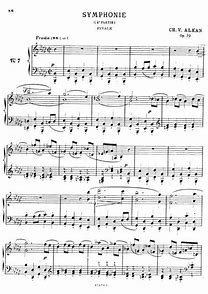

Bộ Études Op. 39 của Charles-Valentin Alkan là một kiệt tác âm nhạc đồ sộ và đầy thách thức, được xem là một trong những tác phẩm khó nhất từng được viết cho piano solo. Bộ sưu tập này bao gồm 12 bản études, mỗi bản được viết ở một cung thứ khác nhau, thể hiện sự đa dạng và phức tạp trong kỹ thuật piano của Alkan.
STT
Những bar đầu
Nội dung
No 1 - "Comme le vent" (A minor)
Bản étude này mở đầu cho bộ sưu tập với một giai điệu nhanh nhẹn và lướt nhẹ, thể hiện sự linh hoạt và kỹ thuật chạy ngón điêu luyện.
Tác phẩm tập trung vào tốc độ, độ chính xác và khả năng kiểm soát những đoạn arpeggio và scale phức tạp.
No 2 - "En rythme molossique" (D minor)
Đây là một bản étude mạnh mẽ và đầy kịch tính, với những nhịp điệu dồn dập và những hợp âm dày đặc.
"Molossus" là một loại nhịp điệu cổ xưa, và Alkan đã sử dụng nó để tạo ra một hiệu ứng âm thanh mạnh mẽ và ấn tượng.
No 3 - "Scherzo-diabolico" (G minor)
Etude này mang đến một cảm giác thanh thoát với một giai điệu nổi bật ở tay phải, đan xen với các hòa âm thanh thoát ở tay trái. Đây là một trong những Etude có tầm ảnh hưởng lớn trong các chương trình hòa tấu piano.
No 4 - Symphony for solo piano - 1st movement (C minor)
Đây là một tổ khúc gồm bốn bản études, được kết hợp lại thành một bản giao hưởng thu nhỏ cho piano solo.
Mỗi chương của bản giao hưởng đều mang một tính chất âm nhạc riêng biệt, từ những giai điệu u sầu và bi tráng đến những đoạn nhạc mạnh mẽ và đầy kịch tính.
No 5 - Symphony for solo piano - 2nd movement (F minor)
No 6 - Symphony for solo piano - 3rd movement (Bb minor)

No 7 - Symphony for solo piano - 4th movement (Eb minor)

No 8 - Concerto for solo piano - 1st movement (G# minor)
Tương tự như "Symphonie", đây là một tổ khúc gồm ba bản études, được kết hợp lại thành một bản concerto cho piano solo.
Bản concerto này thể hiện sự đối lập giữa piano solo và dàn nhạc (được thể hiện bằng các lớp âm thanh khác nhau trên piano).
No 9 - Concerto for solo piano - 1st movement (C# minor)
No 10 - Concerto for solo piano - 3rd movement (F# minor)
No 11 - Ouverture (B major)
Bản étude này mang tính chất trang trọng và hùng vĩ, với những hợp âm mạnh mẽ và những giai điệu đầy kịch tính.
Alkan đã sử dụng những kỹ thuật như tremolo và octave để tạo ra một hiệu ứng âm thanh hoành tráng.
No 12 - Le Festin d'Ésope (E minor)
Đây là bản étude nổi tiếng nhất trong bộ sưu tập, được lấy cảm hứng từ một trong những truyện ngụ ngôn của Aesop.
Tác phẩm là một chuỗi các biến tấu. Mỗi biến tấu mang một sắc thái và kỹ thuật khác nhau, mang đến một kết thúc đầy ngoạn mục cho toàn bộ bộ sưu tập.